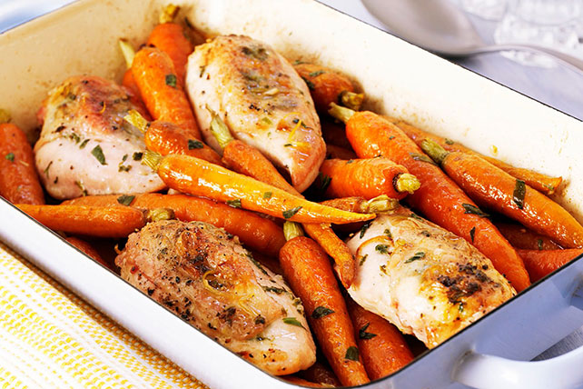

Roast Chicken

Description
The secret to tender, juicy, delicious Roast Chicken Breasts with Carrots? Bake them with a mixture of Italian dressing and fresh lemon juice and use young whole carrots for extra flair. Try Roast Chicken Breasts with Carrots for dinner tonight.
Ingredients
- 4 cloves garlic, thinly sliced
- juice from 1 lemon
- 2 Tbsp. chopped fresh parsley
- 1 Tbsp. chopped fresh thyme leaves
- 16 small carrots (1-1/2 lb.), peeled
- 1/4 tsp. pepper
- 4 small boneless skinless chicken breasts (1 lb.)
- 1/4 cup KRAFT Tuscan House Italian Dressing
Steps
- Heat oven to 350°F.
- Spread garlic onto bottom of 13x9-inch baking dish sprayed with cooking spray; top with carrots and chicken.
- Mix dressing and lemon juice until blended; pour over chicken and carrots. Sprinkle with parsley, thyme and pepper.
- Bake 18 to 20 min. or until chicken is done (165°F), turning chicken and spooning pan juices over chicken and carrots after 10 min.
- Serve chicken and carrots topped with pan juices.